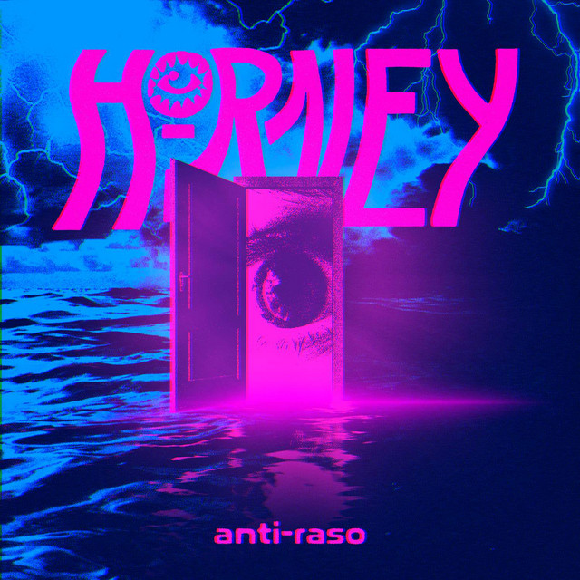
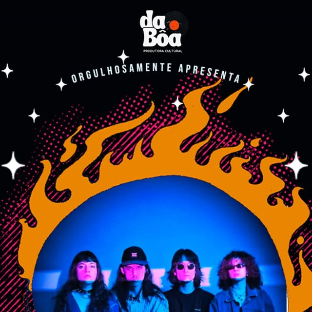
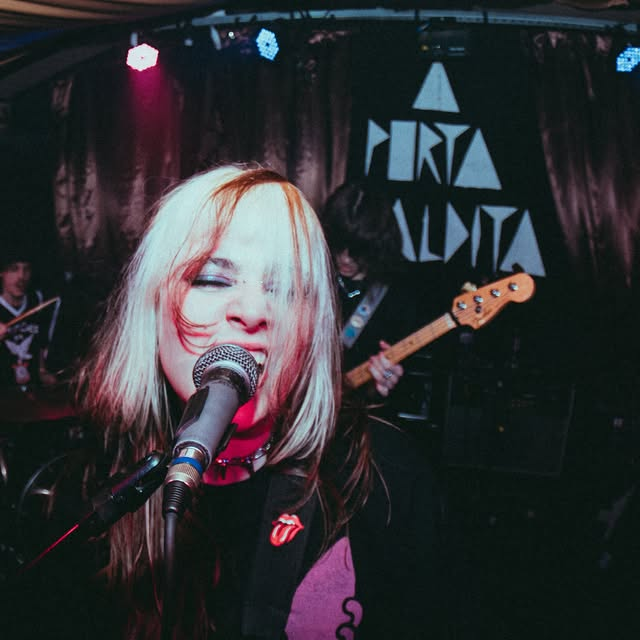
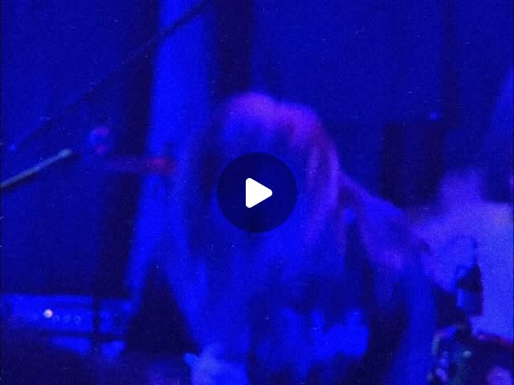
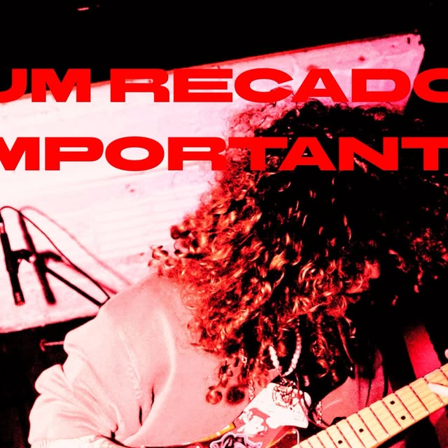
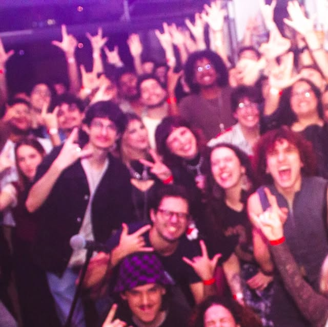
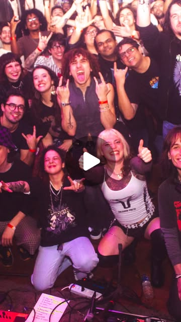

PISA NUM PEDAL
Cada pedal abre uma seção. Gira os knobs: arrasta, usa a rodinha ou as setas do teclado, e a página distorce junto. Atalhos de teclado: 1–5. O som começa desligado: liga no SOM lá no amp.
FUZZ
MÚSICA
DELAY
VÍDEO
TUNER
SHOWS
LOOPER
MERCH
WAH
SOCIAL
PEDAL 01 · FUZZ
MÚSICA

EP NOVO · 30.07.2026 · 4 FAIXAS
ANTI-RASO
- 01OFF!
- 02QUEBRA-CABEÇA feat. Dani Buarque
- 03MERGULHAR
- 04ROMÂNTICA
7.8/10review da Unglued ↗“ANTI-RASO significa mergulhar fundo nas coisas. É se recusar a viver apenas na superfície.”
— Duda Maiolini
DISCOGRAFIA
PEDAL 02 · DELAY
VÍDEO
Gira TIME e MIX no delay e as imagens ganham eco.
PEDAL 03 · TUNER
SHOWS
-
PASSADO
ROCK NIGHT @ FFFRONT
São Paulo (SP) · com Mastrobiso · ver flyer ↗
-
PASSADO
SHOW
local não divulgado
-
PRÓXIMO
ÚLTIMO SHOW DO ANO
LOCAL EM BREVE · infos no @horney.band ↗
PEDAL 04 · LOOPER
MERCH
-
CAMISETA OLHO
Preta, olho-sol no peito.
EM BREVE -
CAMISETA ANTI-RASO
Off-white, capa do EP estampada.
EM BREVE -
KIT DE PALHETAS
Três cores, uma pra cada humor.
EM BREVE -
PATCH BORDADO
Pra jaqueta, mochila ou case.
EM BREVE
Ainda sem loja. Quer garantir o seu primeiro? Chama no direct.
CHAMA NA DM ↗
PEDAL 05 · WAH
SOCIAL
ÚLTIMAS NO @HORNEY.BAND ↗





